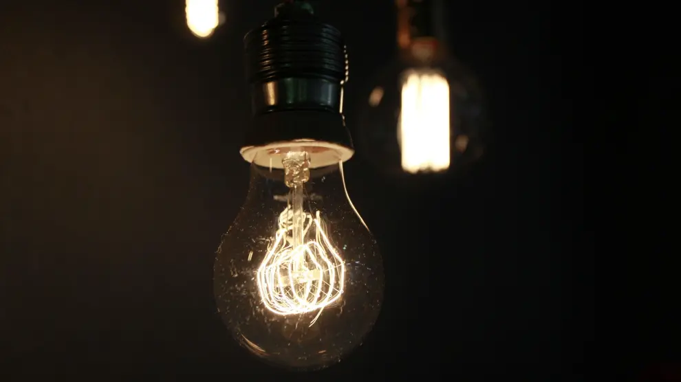

Primer R: Reducir
La primera R se refiere a "reducir", y reducir se refiere a minimizar el consumo y la cantidad de basura que tiramos. Con esto no solo nos referimos a no comprar lo que no sea necesario, si no tambien a reducir el gasto de los servicios que tengamos, como por ejemplo apagar la luz cuando no la estemos usando, desconectar aparatos electronicos que no estemos utilizando, entre otros.
¿Como puedo reducir?
Aplicar esta R es algo muy sencillo de hacer. Para esto hay que ser concientes todo el tiempo de lo que estamos gastando aplicando esto a nuestra vida cotidiana. Para esto podemos hacer lo que dijimos anteriormente, apagar las luces que no estemos necesitando, desconectar aparatos electronicos, etc. Pero aparte de esos aun hay muchos otros que podemos realizar, como por ejemplo comprar productos de buena calidad que tengan mas vida util que otros, para no estarlos cambiando a cada rato; O tambien utilizar solo lo necesario como por ejemplo el papel higienico o servilletas.